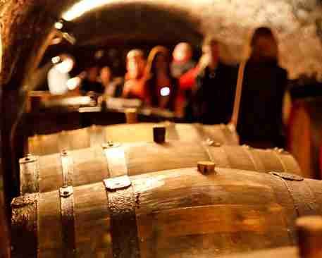

Vins rouges du Sud Ouest – Nos coups de coeur

Nous avons préparé une nouvelle sélection d’une partie des vins du Sud Ouest disponibles à notre cave . Quelque soit vos envies, vous trouverez le vin adéquat pour accompagner votre menu.
Du vin charnu au vin rond et gourmand en passant par des notes de vanille et de fruits rouges, nos vins colleront parfaitement à la cuisine de cette région.
Notre sélection de vins de Loire
Nous avons pour vous, fait une sélection d’une partie des vins de Loire dont nous disposons. Quelque soit votre repas, vous pourrez trouver le vin idéal pour accompagner votre menu.
Du vin fruité au vin minéral en passant pas des touches florales sans oublier quelques vins bio, nous espérons que notre sélection satisfera les grands amateurs de vins comme les novices.
Cours d'œnologie
L’atelier ŒNOLOGIE du CFC propose 10 cours de 2 h par an, à raison d’1 cours par mois, de septembre à juin.
Les cours, regroupant une quinzaine de participants, sont assurés par Nicolas Colloc’h. Les thèmes abordés sont à chaque fois différents : régions, cépages, producteurs, vins étrangers, techniques de vinification.
Lors de chaque cours, 5 vins font l’objet d’exposés, dégustations, comparaisons…
Un voyage dans une région viticole est proposé chaque année.
En 2015 : la vallée du Douro au Portugal.
 ns
ns